v17 三战录屏（同一个种子 SIM00004、同样的打法，可以和第 0.4 节 v16、第 0.5 节 v15 对比）：
英雄合击展示（守关战，9 名英雄，两名倍乘英雄把这一手抬到高级：一代的「地裂」高级演出 + 天降法阵 + 法术场）：
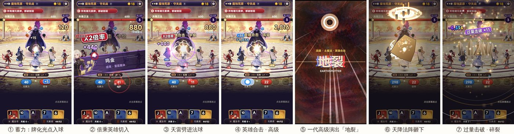
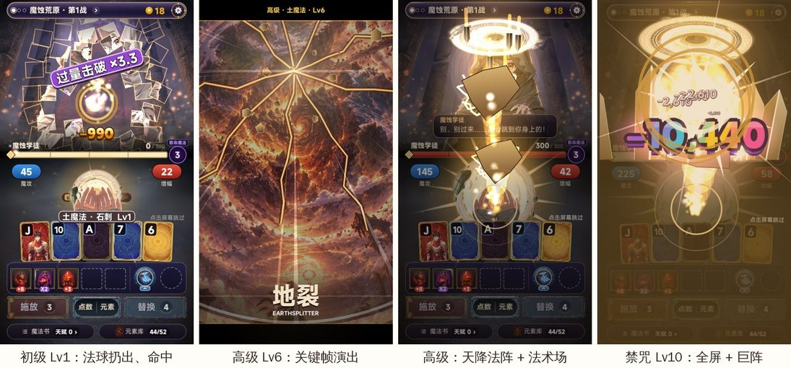
| 一代 | v16 | |
|---|---|---|
| 结构 | 先蓄力、后释放：每张牌、每件装备只往掌心的法球里灌一颗光点，伤害一点不出；total 时法阵张开、法球扔出去，一口气打完 | 每触发一下就直接打首领一下，十几下小伤害，没有高潮 |
| 释放 | 魔法名大字；按等级 1 / 2 / 3 / 5 发；12 种魔法各自的弹道和命中粒子、命中音 | 只有通用光束 |
| 高阶 | 中级：法术场在敌人身上爆开；高级：天降法阵往下砸 + 关键帧演出（「地裂」）；禁咒：全屏黑、巨阵、白闪、长顿帧 | 没有阶级 |
| 伤害数字 | 每发一个数字，总数在敌人身上滚动累加，最后停在角落常驻 | 每下一个小数字 |
| 击杀 | 白化定格 → 立绘碎成块飞散 → 「击破！」/「过量击破 ×N」 | 淡出 |
结论：打击感来自「攒 → 爆」的落差，所以二代要先把一代这条线原样接回来，再往上加。
| 阶段 | 一代原有（接进二代） | 二代新增（升级） |
|---|---|---|
| 起手（牌型成立） | 法球成形、魔法名 | 一代每种魔法自己的法阵铺在主角脚下（透视压扁、旋转），光柱从阵里升到主角头顶的法球 |
| 蓄力（逐张牌 / 逐名英雄） | 光点飞进法球，法球越攒越大 | 英雄做出手动作，一道类型色的灌注光束射进法球，头上标这一下贡献的伤害（原版差值）；倍乘英雄切入立绘 → 天雷劈进法球（闪白、顿帧、冲击环）；首领右侧「蓄力 · N 段」+ 法球里的魔力总数 + 当前阶级 |
| 合击升阶 | — | 英雄助阵抬高这一手的施法阶级：每名出过手的英雄 +1 级，倍乘英雄再 +2 级，最高到高级（Lv9）；升阶时法球旁弹出「英雄合击 · 中级 / 高级」。禁咒只认真正的 Lv10 |
| 释放（total） | 能量汇聚、法阵张开；按阶级 1 / 2 / 3 / 5 发；12 种魔法的弹道、命中粒子和命中音；中级起法术场；高级天降法阵 + 关键帧演出；禁咒全屏 | 释放前全员合击：出过手的英雄一起再灌一次；每一发命中首领都后仰、压扁、白闪、镜头往首领推 |
| 伤害数字 | 每发一个、总数滚动、常驻角落 | 常驻位置挪到首领左上，不压英雄 |
| 击杀 | 白化 → 碎块 → 「击破！」/「过量击破 ×N」 | 加光柱和地面冲击波 |
| 输了 | 敌人的致命魔法 | v16 漏演了，现在接回来 |
伤害归属照旧：每名英雄这一下贡献多少（原版的差值）标在他头上；释放时这些合成一发打出去，总和 = 原版得分，首领仍然是这一手全部算完才死。
时长：初级一手和一代一样（蓄力随原版节拍，释放约 1 秒）；高级的关键帧演出每场每种魔法只放一次（一代的规矩），之后同一魔法的高级只放天降法阵。
v16 三战录屏（留作对比）（同一个种子 SIM00004、同样的打法，可以和第 0.5 节的 v15 录屏直接对比）：
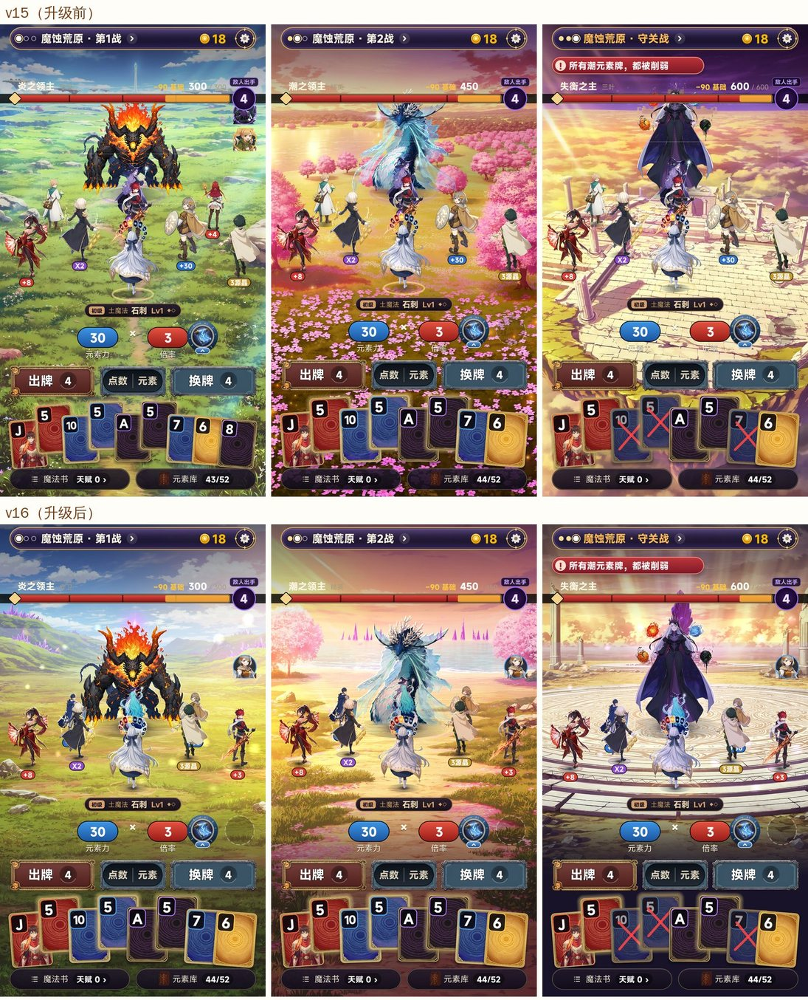
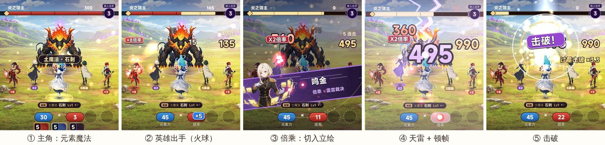
| # | 类别 | v15 的问题 | 原因 |
|---|---|---|---|
| 1 | 布局 | 人物像贴在场景上，「违和」 | 场景是高空俯拍（地平线在顶上），人物是平视背影，两套透视 |
| 2 | 布局 | 人物和场景光线、色调不一致 | 没有接触阴影、没有环境色、没有轮廓光，远近一样清楚 |
| 3 | 布局 | 首领太大、顶到血条，脚下悬空 | 首领高度和位置是拍脑袋的，不在地面透视里 |
| 4 | 布局 | 出的牌飞进战场正中，挡住首领 | 沿用了一代「出牌飞到场中央」的位置 |
| 5 | 布局 | 只有 1 名英雄时站在屏幕最左边，被切掉 | 站位按固定 5 格从左往右填 |
| 6 | 动作 | 英雄完全不动，只亮一下 | 没有动作，只有发光 |
| 7 | 技能 | 所有攻击都是一样的小光球 | 不分类型，没有起手、飞行、命中三段 |
| 8 | 技能 | 主角放魔法时没有任何表现 | 牌型的伤害直接从主角头顶飞一个光点 |
| 9 | 技能 | 一手结束时又飞了一轮一代的法术齐射 | 一代 castfx 在总结算时再演一遍，伤害看起来像算了两次 |
| 10 | 打击感 | 首领挨打只闪一下白 | 没有顿帧、后仰、压扁、类型色 |
| 11 | 打击感 | 伤害数字小、带底框、叠在血条上 | 用的是一代弹分框，位置在首领头顶 |
| 12 | 打击感 | 看不出这一手打了多少下、一共多少 | 没有连击和本手累计 |
| 13 | 首领 | 首领是一张静止图，不会「回合」 | 没有待机动作、没有出手前的蓄力 |
| 14 | 击杀 | 击杀只是淡出 | 没有定格、碎裂、光柱 |
| 方向 | 做法 |
|---|---|
| 镜头和透视（1、3） | 三张场景重新出图，改成平视镜头（地平线在上三分之一，中间是空地）；按地平线算地面透视：站得越远越小，首领、英雄、主角同一套透视；首领脚底钉在地面上 |
| 融入场景（2） | 每张场景一套光：环境色乘在人物上，主光那一侧加轮廓光，脚下接触阴影，远处的人蒙一层雾色（空气透视）；场景里飘光点 / 花瓣 / 腐化余烬 |
| 战场留白（4） | 出的牌落在按钮那一行（计分时按钮藏起来、手牌往下让），战场里只有战斗 |
| 站位（5） | 人少时先站两翼，中路留给首领；前排 5 名呈弧形、中间那名站得更远；后排 3 名 |
| 动作（6） | 程序动作：待机呼吸 → 蓄力下蹲 → 出手前冲 + 拉伸 → 回位回弹；倍乘英雄跃起放大招，经济英雄跳起撒金币 |
| 技能（7、8） | 四类各一种招式：筹码 = 穿刺长枪（直线、最快）、倍率 = 火球（弧线、火尾、爆炸）、倍乘 = 大招（切入立绘 → 天雷劈下 → 全屏闪 + 顿帧 + 镜头推近）、经济 = 撒金币；主角：牌型成立时脚下法阵转起、头顶亮出魔法名、一道光柱，每张计分的牌化成那张牌颜色的晶刃飞出去 |
| 收尾（9） | 去掉一代的总结算齐射：伤害已经一发一发打完，结尾只定格「本手伤害」 |
| 打击感（10） | 顿帧（只停战斗画面，计分节奏不变）、首领白闪 + 类型色 + 后仰回弹 + 压扁、命中火花 / 冲击环 / 震屏；全部按「这一下占首领血量的比例」分 4 档，越重越狠 |
| 数字（11） | 描边大字、按类型上色（筹码蓝 / 倍率红 / 倍乘紫 / 主角金）、弹出放大再回落、新数字出来时旧的往上让 |
| 连击（12） | 首领右侧：「N 连击」+ 本手伤害累计跳动，结尾标「本手伤害」，超额时「过量击破 ×N」 |
| 首领（13） | 呼吸、腐化气息；脚下致命魔法引导环（出过几手亮几格）；每手打完没死就蓄力一次（身形一涨、紫光一圈） |
| 击杀（14） | 白化定格 → 碎成晶片 → 光柱 + 地面冲击波 → 「击破！」 |
时长：一次出手（起手到命中）0.3–0.5 秒，大招约 0.9 秒，都在原版每一下的节拍里，不拉长一手的总时长；×2 / ×3 / ×4 倍速时动作一起加快。
v15 三战录屏（升级前，留作对比）（76 秒：新开一局、没有英雄，种子 SIM00004，机器人按原版规则打：第 1 战 → 结算 → 商店 → 第 2 战 → 结算 → 商店 → 守关战；×1 速度）：
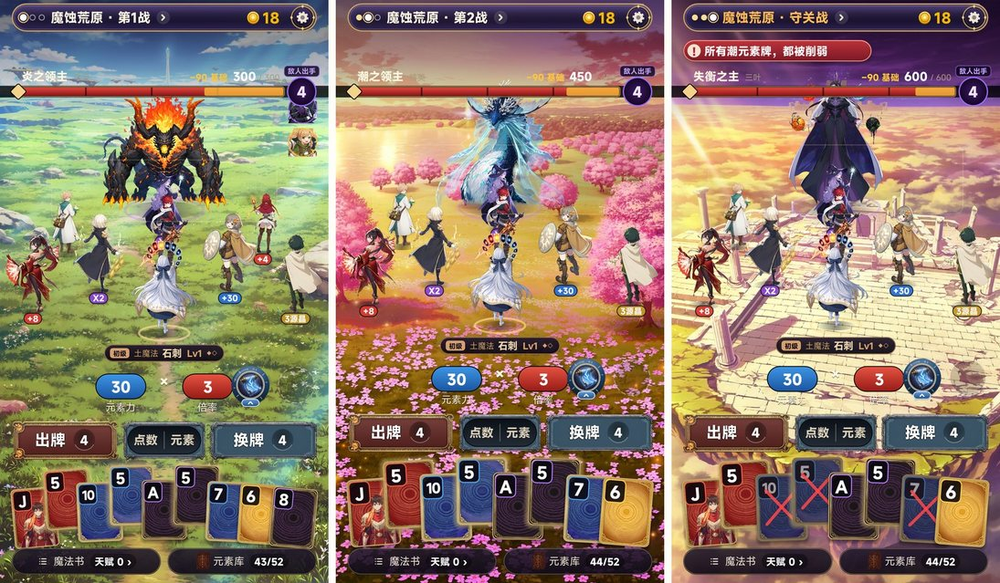
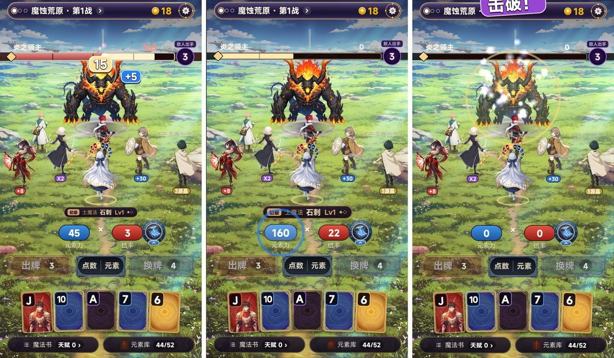
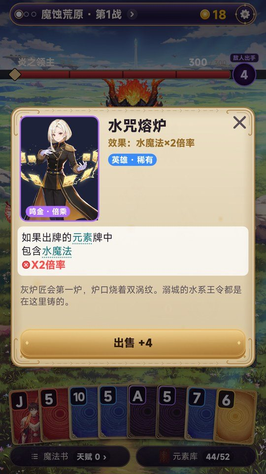
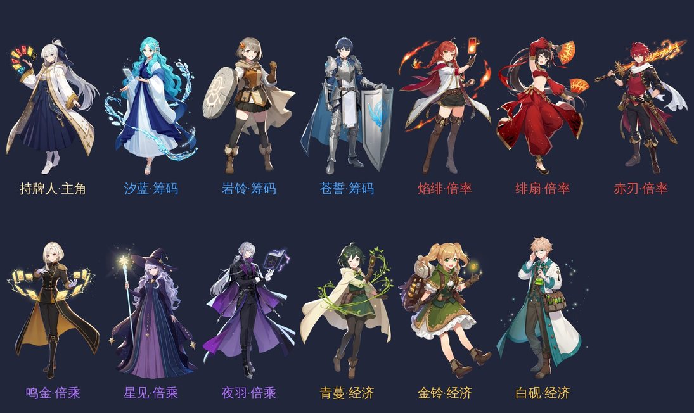
| 项 | 做了什么 |
|---|---|
| 规则 | 原版计分代码一行没改，768 个测试全部通过；一代对原版的 4 处改动（新手护航）用总开关 PURE_RULES 全部关掉 |
| 战斗界面 | 整屏是关卡场景（3 战 3 张）；首领单挑；主角前排正中，前排 5 名英雄呈弧形、后排 3 名，第 9 名起候补头像；一代的顶栏、血条、致命魔法印记、牌型牌、元素力 × 倍率、道具栏、出牌 / 排序 / 换牌、魔法书、元素库全部保留 |
| 英雄 | 每张小丑牌一名英雄，按原版效果归进 4 类；脚下是原版效果角标（+8、×2、+30、3源晶）；点英雄 = 一代小丑牌的详情、出售、拖动换位，原样可用，详情里换成英雄正面立绘 |
| 伤害 | 只读原版的计分事件：每一下 = 这一下之后的累计得分取整 − 之前的累计得分取整，记给触发者（重复触发记给触发重复的英雄）；游戏里每手都自检「伤害之和 = 原版得分」，三战录屏里 9 手全部一致 |
| 倍速 | 不看广告：第一世打到第 4 关开 ×2，第三世开 ×3，第四世开 ×4 |
| 资源 | 英雄正面 13 张（含主角）+ 背影 13 张、首领 3 只、场景 3 张，全部正式出图、去底、裁边 |
还没做（下一步）：
| 项 | 内容 |
|---|---|
| 名字（暂定） | 《源神：元素牌》（名字风险见第 14 节） |
| 品类 | 竖屏单手卡牌肉鸽；底层规则 = 原版《小丑牌》（Balatro），和一代相同 |
| 题材 | 二次元元素魔法：牌叫元素牌、牌型叫元素魔法（沿用一代），小丑牌变成英雄 |
| 和一代的区别 | 一代是「你 vs 一个敌人立绘」，二代是「主角带着英雄小队，在场景里和首领打」：小丑牌从图标变成站在场上的英雄，原版计分一步步演成英雄出手 |
| 画风 | 对标原神的二次元赛璐璐：干净线条、通透天空、轮廓光和元素粒子 |
| 战斗镜头 | 主角身后、拉远，全屏都是场景，界面半透明（D3 队伍同框） |
| 平台 | TapTap 制造（UrhoX），竖屏 |
| 一句话卖点 | 「一手牌打出去，主角先出手，英雄一个接一个接上，伤害一路翻倍」 |
| 经验 | 二代怎么用 |
|---|---|
| 规则按原版 1:1 复刻，有自动测试 | 规则代码整套沿用，二代一行不改（第 3 节） |
| 表现层不碰规则 | 英雄战斗只读计分事件，不改数字（第 4 节） |
| 「先做第一关给我看，确认后再铺满」是返工最少的做法 | 先做第一世第 1 关三战（第 12 节） |
| 打击感按伤害大小和魔法等级分级 | 英雄出手的演出照这套分级：加元素力 → 普攻，加倍率 → 加强攻击，×倍率 → 大招 |
| 用词集中在一个文件里，换皮和改名都便宜 | 二代的用词继续集中管理 |
| 低频入口压成底部一排胶囊；只有计分板用金边；空槽画虚线、不写「装备 5/5」 | 二代界面照做（第 5 节） |
| 守关规则用一条红缎带，「无特殊规则」不显示 | 照做 |
| 局外系统按局数开放，没开放的直接隐藏、不显示上锁 | 照做（第 9 节） |
| 新手护航：前 3 局送馈赠；第 2、3 局第一个商店保底一件基础加倍率装备 | 照做 |
| 一代的坑 | 二代的规矩 |
|---|---|
| 先做内容、后定题材：女主系统做了 108 张立绘、1,510 句配音，最后整套暂停 | 题材和战斗界面定了（就是这份方案）再批量出图；最小循环只用 12 个英雄形象 |
| 改名 9 次，局外成长一天改 7 版 | 名字、用词在这份方案里一次定死（第 15 节） |
| 开场 CG 约 83 秒、点屏幕不能跳过 | 开场不超过 10 秒，随时可跳 |
| 引导局用固定种子打到第 4 关，之后两局在第 1 关就死（难度断崖） | 引导局不用固定种子作弊；靠新手护航降低第 1 关难度 |
| 第一次回营地冒 4 个红点，前 3 局冒出 13 个局外系统 | 一屏最多 1 个提示，第 9 节的开放节奏只放必要的 |
| 「新手教学 2/16」写了分母 | 不写分母 |
| 引导小提示盖住了守关规则，新手死了不知道为什么 | 提示不能盖住敌人信息栏（第 5 节的「敌人区」） |
| 同一个东西 4 种叫法；「魔法书」一词两用（局内牌局信息、局外强化） | 局内叫「魔法书」；局外强化另起名字（第 6 节） |
| 一手施放约 7.5 秒，倍速要看广告 | 英雄演出有总时长上限（第 4.6 节）；倍速开局就免费给 ×2 |
| 难度押在广告上（默认少一次出牌，看广告补） | 原版次数一个不少，广告只做额外奖励 |
| 广告没准备好时按钮照常显示，点了弹「没准备好」 | 广告不可用时按钮直接隐藏 |
| 改手机日期能刷广告次数；迟到的回调丢奖励；看广告期间没锁输入 | 二代沿用修好的广告模块（第 10 节） |
| 字太小 | 全局最小 12pt；点击区至少 44×44；按钮离屏幕底至少 44pt |
照你的「英雄战斗化改造 · 最终规则」第 1 条，下面这些全部沿用二代仓库里已有的原版规则代码（scripts/game/，一代逐条对过原版，现在有 768 个测试），一行不动：
（v13 设计案的内容，按你给的规则整理，细节不变。）
| 角色 | 负责 |
|---|---|
| 主角（一直在场，前排正中） | 牌型的基础筹码和倍率；打出的扑克牌本身的筹码；扑克牌的强化、封印、版本；留在手里的牌的效果（钢铁牌等）；牌组效果；星球牌带来的计分 |
| 英雄（每张小丑牌一名） | 照原版的触发条件和顺序执行这张小丑牌的效果 |
英雄出手的演法（沿用一代的打击感分级）：
| 原版效果 | 演出 |
|---|---|
| +筹码 | 普攻：一道元素光，跳伤害数字 |
| +倍率 | 加强攻击：光更粗 |
| ×倍率 | 大招：镜头轻推，大号数字 |
| 金币 | 不攻击，头顶冒金币、跳「+$N」 |
| 成长 | 不攻击，身上亮一下、跳「成长」 |
| 复制（蓝图、头脑风暴） | 演被复制者的招式，伤害记在复制者身上 |
| 改规则（四指、捷径等） | 常驻，不出手，脚下一个小图标 |
例子（对子 K K，两名英雄）：
| 事件 | 筹码 | 倍率 | 累计 | 伤害 | 谁 |
|---|---|---|---|---|---|
| 牌型：对子 Lv1 | 10 | 2 | 20 | 20 | 主角 |
| K（+10） | 20 | 2 | 40 | 20 | 主角 |
| K（+10） | 30 | 2 | 60 | 20 | 主角 |
| 英雄「开心」：对子 +8 倍率 | 30 | 10 | 300 | 240 | 英雄 |
| 英雄「二重奏」：对子 ×2 倍率 | 30 | 20 | 600 | 300 | 英雄 |
| 合计 | 600 | 600 |
原版里有让得分变少的事件（比如第 2 关起会出现的 Boss「燧石」砍半基础筹码和倍率）。这一下差值为负，记在敌人头上，演成「首领削弱」：敌人头顶跳绿色「+N」、血条回涨一截。总和不变。
小丑牌让扑克牌再计一次分时（比如「重新触发所有打出的 2、3、4、5」），原版会先出一个标明是哪张小丑牌触发的事件。已定：这一次重复计出的伤害算给那名英雄；红色封印的重复算主角。
| 原版 | 二代 |
|---|---|
| 小盲 / 大盲 / Boss 盲注 | 每一战一个首领，不做群怪、不打多个目标 |
| 盲注目标分 | 首领血量 |
| Boss 盲注效果 | 首领的被动，红缎带显示 |
| 剩余出牌次数 | 首领的致命魔法引导：血条右端的印记，数字和圈 = 剩余出牌 |
（首领）
英6 英8 英7 ← 后排 3 名
英1 英2 英3 英4 英5 ← 前排 5 名，中间靠后，呈弧形
主角 ← 站在弧口正中
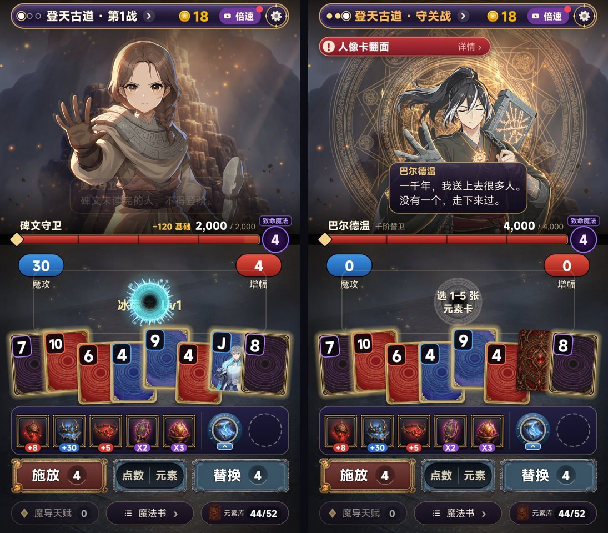
| 一代的元素 | 作用 / 点了会怎样 | v12、v13 效果图 | 二代 v14 |
|---|---|---|---|
| 顶栏：关卡名 + 三场小点 + 「›」 | 点开赛程 | 只有关卡名 + 进度节点 | 补回：三场小点 + 「›」，点开赛程 |
| 顶栏：金币 | 滚动数字 | 有 | 保留 |
| 顶栏：倍速 | ×1/×2/×3 | 漏了 | 补回：开局就免费给 ×2 |
| 顶栏：设置齿轮 | 设置 | 有 | 保留 |
| 守关规则红缎带 | 点开看规则详情 | 只写在首领名下面 | 补回：红缎带 + 「详情 ›」 |
| 敌人名字行：名字 · 称号 · HP / 上限 | — | 有 | 保留 |
| 血条：75/50/25% 分段；选中牌的预计伤害画成条纹；「可击破！」 | 选牌时就知道这手能打多少 | 只有普通血条 | 补回：分段 + 预计伤害条纹 + 「−N 预计」 |
| 致命魔法印记（剩余施放数） | 倒数到 0 敌人放致命魔法 | 写成「N 手后出手」 | 补回：一代的紫色印记，圈数 = 剩余出牌 = 引导 |
| 魔法铭牌：品阶 + 魔法名 + Lv | — | 只有名字和 Lv | 补回：品阶菱形 + 名字 + Lv + 反应名 |
| 魔攻 × 增幅 | 实时跳 | 有（元素力 × 倍率） | 保留 |
| 装备栏 5 格（带 +8 / ×2 角标） | 点：说明 + 出售；长按：详情；拖动：换顺序 | 头像牌，或英雄站场上但没有角标 | 补回：英雄脚下带效果角标；点英雄弹详情（出售 / 换位置）；空位虚线圈 |
| 道具栏 2 格 | 点：说明 + 使用 / 出售 | 漏了 | 补回：魔法铭牌右边 2 个圆槽 |
| 施放 / 替换按钮（次数在凹槽里） | — | 有（出牌 / 换牌） | 保留，在牌的上方；换牌为 0 时显示看广告 +1 |
| 排序：点数 / 元素 | 重新排手牌 | 漏了 | 补回：两个按钮中间 |
| 手牌 8 张（人像牌、强化、封印、版本） | 点选，长按看详情 | 只有四色 + 点数 | 补回：J Q K 人像、金牌 / 玻璃牌、封印等标记照一代显示 |
| 底部：魔导天赋 N | 打开天赋 | 漏了 | 并进魔法书（第 6 节） |
| 底部：魔法书 › | 打开牌局信息 | 漏了 | 补回：「魔法书 · 天赋 N ›」 |
| 底部：元素库 44/52 | 打开牌库 | 漏了 | 补回 |
| 输了且差距 ≤30% 时「再来一手」 | 看广告 | 没画 | 保留（第 10 节） |
| 敌人开战台词、关卡标题字幕 | 点一下跳过 | 没画 | 保留，≤3 秒、可跳 |
| 我方血量 | （一代没有） | v12 有一条 | 去掉：和致命魔法引导重复，一代也没有 |
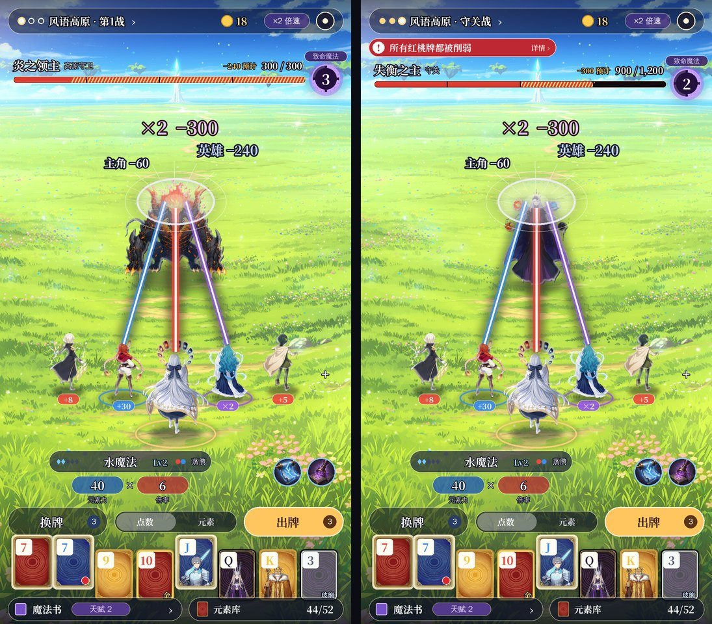
从上到下：
层级（一代 HUD 减法规矩）：只有出牌键和魔法铭牌用亮色；其余都是半透明深色；一屏最多一个提示；提示不能盖住敌人区。
一代的「魔导天赋」就是原版的优惠券、状态和奖励记录；一代的「魔法书」就是原版的牌局信息，而且里面已经有「魔导天赋」标签页。二代把底部两个入口合成一个：
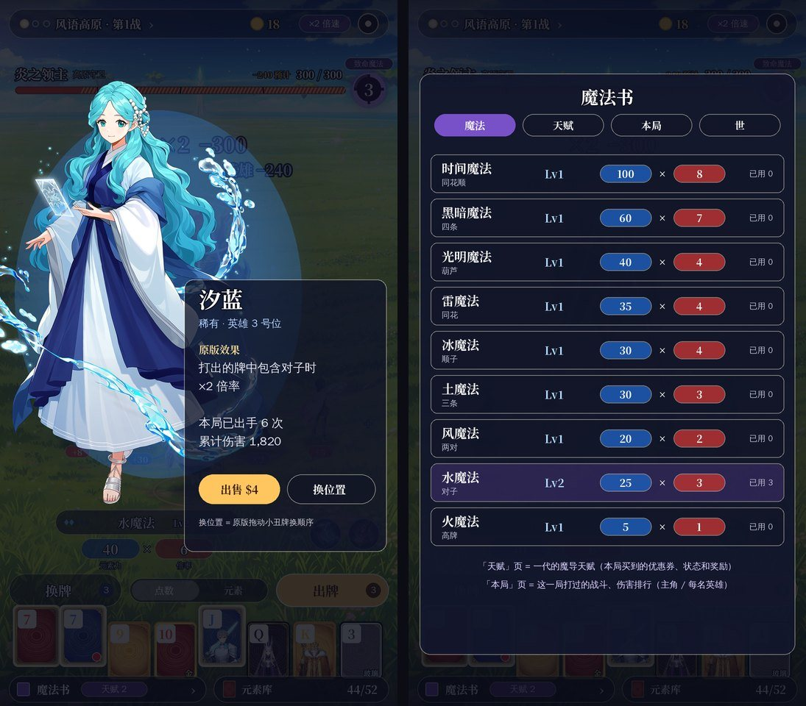
| 标签页 | 内容 |
|---|---|
| 魔法 | 12 种元素魔法（牌型）的等级、元素力 × 倍率、本局用了几次；刚升级的高亮 |
| 天赋 | 一代的魔导天赋：本局买到的优惠券、状态和奖励；入口上的「天赋 N」就是这里的数量 |
| 本局 | 这一局打过的战斗；伤害排行：主角和每名英雄本局造成的总伤害（二代新加，只是统计，数据来自第 4.2 节的伤害记账） |
| 世 | 一代的「世」页（当前是第几世、这一世的规则） |
名字定死：局内这个叫「魔法书」；一代局外那个强化界面也叫「魔法书」（一词两用是一代的坑），二代局外改叫「魔导研习」。
一代装备栏能做的，二代在场上都能做：
| 操作 | 一代（装备栏） | 二代（场上的英雄） |
|---|---|---|
| 看效果 | 点装备 | 点英雄，弹全身立绘 + 原版效果 + 本局出手次数和累计伤害 |
| 出售 | 点装备 → 出售 | 弹窗里「出售 $N」（价格照原版） |
| 换顺序 | 拖动装备 | 弹窗里「换位置」→ 进入编队：场上 9 个站位亮起，拖英雄换位；顺序就是原版小丑牌顺序 |
| 候补（超过 8 名） | 一代装备栏上限是原版的 5 格 | 右侧头像列，点头像同样弹详情 |
| 新拿到英雄 | 装备飞进格子 | 英雄从远处跑进空位，站好后亮一下 |
| 东西 | 二代 |
|---|---|
| 元素牌 | 红黄蓝黑四色牌底（一代原样），只写点数；J Q K 是人像牌；强化（金、玻璃、钢铁等）、封印、版本照一代的标记显示；选中的牌抬起发光 |
| 道具栏 | 2 个圆槽（原版消耗牌位，扩容照原版）；点开说明 + 使用 / 出售；使用时道具飞向目标，照一代的演出 |
| 元素库 | 底部胶囊「元素库 44/52」，点开是一代的牌库弹窗（剩余牌按四色、点数统计） |
| 排序 | 「点数 / 元素」两段按钮 |
newbie.lua 的节奏，没开放的直接隐藏）：| 第几局后 | 开放 |
|---|---|
| 1 | 唤醒 |
| 2 | 魔导研习（一代局外「魔法书」，二代改名） |
| 3 | 典籍（图鉴） |
| 4 | 另一世、馈赠 |
| 6 | 每日挑战、排行榜 |
| 8 | 成就 |
PURE_RULES）：出牌、换牌次数照原版，商店照原版随机，引导局用随机种子，局外成长不碰计分。第 1 关就是原版白注第 1 关的难度。只有激励视频，没有插屏和开屏：
| 点位 | 名称 | 频次 |
|---|---|---|
| extra_hand | 再来一手（输了且差距 ≤30%） | 每关 1 次 |
| extra_discard | 多换一次（换牌为 0 时） | 每关 1 次 |
| pack_plus2 | 卡包多看两张 | 每关 1 次 |
| start_tag | 开局福袋 | 每局 1 次 |
| crystal_double | 结算源晶翻倍 | 每局 1 次 |
| daily_practice | 每日挑战加练 | 每天 2 次 |
规矩： - 难度不押在广告上，原版次数一个不少； - 广告不可用时按钮隐藏； - 主转化位（再来一手）用独立金色按钮，其余内嵌； - 倍速不再放广告后面（一代的 speed_unlock 取消），改成按进度开放（已定）：第一世打到第 4 关开 ×2，第三世开 ×3，第四世开 ×4。
新应用默认没开广告变现，上线前要在中控开通。
画风：二次元赛璐璐，对标原神，干净线条，通透天空，轮廓光，元素粒子。主色按元素牌四色：红、黄、蓝、黑（紫黑）。
英雄按功能分 4 类（150 张小丑牌按原版效果归类：+筹码 19、+倍率 35、×倍率 35、经济 / 其他 61）：
| 类型 | 颜色 | 形象（女 · 女 · 男） | 场上角标 |
|---|---|---|---|
| 筹码 | 蓝 | 汐蓝（潮）· 岩铃（盾）· 苍誓（骑士） | +30 |
| 倍率 | 红 | 焰绯（炎）· 绯扇（舞扇）· 赤刃（火剑） | +8 |
| 倍乘 | 紫 | 鸣金（雷）· 星见（星术）· 夜羽（魔典） | ×2 |
| 经济 | 金 | 青蔓（森）· 金铃（行商）· 白砚（药师） | +$ / 源晶 |
角色： - 主角：已出背影（银白长发、白金星纹斗篷、手边一圈四色牌）；正面立绘待出； - 英雄：每张小丑牌一名，要正面全身立绘（点开详情用）+ 背影全身（站场上用）。
| 资源 | 最小循环 | 完整版 |
|---|---|---|
| 主角 | 背影 1 + 正面 1 | 同左 + 表情 |
| 英雄 | 12 个形象轮换：4 类 × 3 人（2 女 1 男），每张小丑牌按功能归类、固定对应一个形象 | 150 名，各一张正面 + 一张背影 |
| 首领 | 3（小盲、大盲、Boss） | 8 关 × 3 = 24，外加另一世 |
| 场景 | 3（同一个镜头：地平线在上方，远处地标） | 8 关各一张 |
| 致命魔法演出 | 1 种 | 一代 8 种沿用、换皮 |
| 界面 | 本方案的战斗界面 | 商店、结算、选关、营地换皮 |
出图：NovelAI V5 出二次元立绘（每张几秒，额度每周约一千多张）；150 名英雄 × 2 张 = 300 张，约两周的额度。
新开一局 → 小盲战 → 结算 → 商店 → 大盲战 → 结算 → 商店 → Boss 战 → 结算。
| 战 | 原版目标分（白注） | 首领 |
|---|---|---|
| 小盲 | 300 | 炎之领主 |
| 大盲 | 450 | 潮之领主 |
| Boss 盲注 | 600（第 1 关能抽到的原版 Boss 都是 2 倍） | 失衡之主（红缎带写这一局抽到的原版 Boss 效果） |
| 项 | 内容 |
|---|---|
| 战斗界面 | 按第 5.3 节完整做进游戏，替换现在的 v8 割草界面 |
| 伤害记账 | 第 4.2–4.4 节 |
| 引导 | 第 4.5 节，沿用一代的致命魔法印记和演出 |
| 英雄 | 12 个形象轮换；详情、出售、换位置；候补 |
| 魔法书 | 4 个标签页（第 6 节） |
| 道具栏、元素库、排序、倍速 | 第 8 节，用一代现有的弹窗 |
| 选关、结算、商店 | 先用一代现有界面 |
| 交付 | 实机截图 + 三战完整录屏；如果你要真机试玩，再建 Maker 应用出二维码 |
| 标准 | 怎么验 |
|---|---|
| 1. 原版玩法完全不变 | 规则代码不改，768 个测试全部通过 |
| 2. 改造前后最终得分一致 | 同一个种子、同样的操作，开 / 关战斗画面各跑一遍，逐手比得分和事件序列 |
| 3. 净伤害之和 = 原版得分 | 机器人跑 1,000 局，每一手都检查 |
| 4. 触发条件、次数、顺序、效果一致 | 伤害记账只读原版事件，不重算；第 2 条同时比事件序列 |
| 5. 最多 1 + 8，超出进候补 | 测试塞 12 张小丑牌：场上 9、候补 4，触发顺序不变 |
| 6. 英雄数量不受新限制 | 同上，负片等扩位照原版能拿 |
| 7. 动画不影响计分和流程 | 快进、×2/×3 时第 2 条照样成立 |
| 8. 界面元素不缺（本版新增） | 第 5.2 节的表逐项打勾 |
| 阶段 | 内容 | 预计 |
|---|---|---|
| M1 最小循环 | 第 12 节全部 + 实机录屏 | 3–4 天 |
| M2 第一世完整 | 8 关、24 个首领、8 张场景、致命魔法换皮 | 1–2 周 |
| M3 英雄全量 | 150 名英雄正面 + 背影 | 约 2 周（受出图额度限制，可以和 M2 并行） |
| M4 外围换皮 | 商店、结算、选关、营地、引导 | 1 周 |
| M5 上线准备 | Maker 应用、广告、成就、TapDB 埋点、商店素材 | 3–5 天 |
| 风险 | 说明 | 对策 |
|---|---|---|
| 名字 | 「源神」是玩家对《原神》的叫法，加上原神式画风，提审可能被当成仿冒，也可能被米哈游投诉 | 建议换名；坚持的话提审前请法务看 |
| 美术量 | 150 名英雄 × 2 张，还要保持同一人正面和背影一致 | 先 12 个形象轮换；NovelAI 出图用同一段人设描述保证一致 |
| 演出拖节奏 | 英雄多时一手演出变长（一代教训） | 第 4.6 节的时长上限 + 倍速免费 + 点屏快进 |
| 屏幕挤 | 8 名英雄 + 主角 + 首领同屏，再加全部一代界面元素 | 镜头拉远、后排缩小；英雄只在触发时亮；界面按一代减法规矩 |
| 没有一代数据可参考 | 一代没有真实留存数据 | 最小循环的测试包接 TapDB，用自己的数据决定下一步 |
| # | 问题 | 结论 | 落实 |
|---|---|---|---|
| 引导 | 引导局用固定种子？ | 不用；新手护航也不要 | 一代护航 4 件全部关掉（第 9 节） |
| 1 | 重复触发算谁的 | 算给触发重复的英雄 | 已做 |
| 2 | 12 个英雄形象轮换 | 可以 | 已出图并做进游戏；同一队里同类型不撞脸 |
| 3 | 站位 | 一排能站 5 名英雄（不算主角） | 前排 5 + 后排 3（第 4.7 节） |
| 4 | 我方血量 | 去掉 | 只留致命魔法引导 |
| 6 | 魔法书 4 个标签页 | 可以，局外改名「魔导研习」 | 战斗底栏「魔法书 · 天赋 N」入口 |
| 7 | 倍速 | ×2 第一世第 4 关、×3 第三世、×4 第四世 | 已做，不看广告 |
| 8 | 名字 | 《源神：元素牌》 | — |
| 9 | 英雄性别 | 男女都有，女 2 : 男 1；按功能分 4 类 | 筹码（蓝）、倍率（红）、倍乘（紫）、经济（金），每类 2 女 1 男（第 11 节） |
| 版本 | 内容 | 结果 |
|---|---|---|
| v14 | 详细版立项方案书（docs/v2/立项方案_v14.md） |
9 个问题定了 → 做最小循环 |
| v13 | 英雄战斗化设计案（docs/v2/立项方案_v13.md） |
漏了一代界面元素 → v14 |
| v12 | D1 / D2 / D3 身后拉远视角（docs/v2/立项方案_v12.md） |
选了 D3 |
| v11 – v9 | 战斗界面的视角和关卡引导 | — |
| v8 | 《源神：元素牌》题材包装（docs/v2/立项方案_v8.md） |
题材定了 |
| v7 及以前 | 扑克地牢、调色师、仙门等 | — |